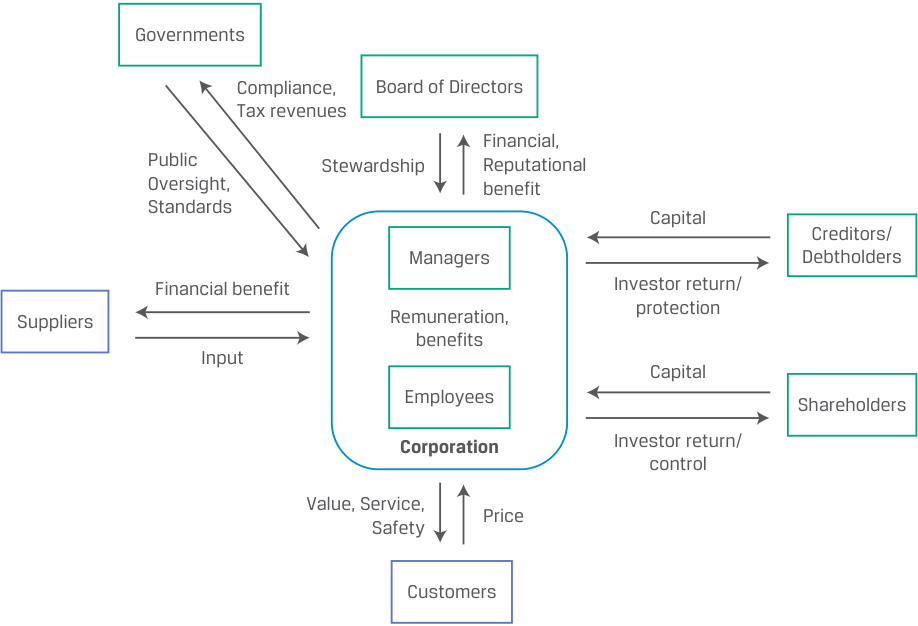
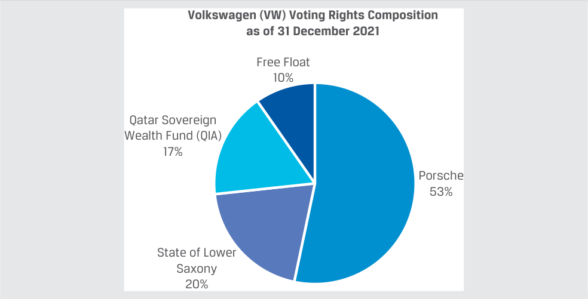

Learning Module 2 Investors and Other Stakeholders - Part 2: Corporate Stakeholders and Governance
Volume 3: Corporate Issuers
Learning Module 2 Investors and Other Stakeholders
Part 2/3: Corporate Stakeholders and Governance (PDF Pages 56–71)
Tập 3: Tổ chức phát hành doanh nghiệp (Corporate Issuers)
Học phần 2: Nhà đầu tư và các bên liên quan khác (Investors and Other Stakeholders)
Phần 2/3: Các bên liên quan của doanh nghiệp và Quản trị công ty (Corporate Stakeholders and Governance) (Trang PDF 56–71)
- All of the following are characteristics of debt except :
-
A. limited liability.
-
B. unlimited return.
-
C. priority in payment.
- Tất cả những điều sau đây đều là đặc điểm của nợ ngoại trừ:
- A. trách nhiệm hữu hạn (limited liability).
- B. tỷ suất sinh lợi không giới hạn (unlimited return).
- C. quyền ưu tiên trong thanh toán (priority in payment).
Solution:
Lời giải:
B is correct. Shareholders, not debtholders, have the potential for unlimited return.
B là đáp án đúng. Cổ đông, chứ không phải chủ nợ, mới có tiềm năng hưởng tỷ suất sinh lợi không giới hạn.
A is incorrect. Debtholders and shareholders both have limited liability. C is incorrect. Debtholders have a priority claim over shareholders to a firm’s cash flows.
A sai. Cả chủ nợ và cổ đông đều có trách nhiệm hữu hạn. C sai. Chủ nợ có quyền đòi hỏi ưu tiên cao hơn cổ đông đối với dòng tiền của doanh nghiệp.
- All else being equal, a jurisdiction increasing its corporate income tax rate would most likely lead to ________ (lower/higher/the same) use of debt financing by issuers.
- Khi các yếu tố khác không đổi, việc một khu vực pháp lý tăng thuế suất thuế thu nhập doanh nghiệp rất có khả năng sẽ dẫn đến việc các tổ chức phát hành sử dụng tài trợ bằng nợ ________ (thấp hơn / cao hơn / giữ nguyên – lower/higher/the same).
Solution:
Lời giải:
Higher. An increase in the corporate income tax rate would likely result in a higher mix of debt. Interest payments on debt are tax deductible, so an increase in the tax rate would reduce the after-tax cost of debt financing, all else being equal, thus making debt financing relatively more attractive than equity financing.
Cao hơn (Higher). Việc tăng thuế suất thuế thu nhập doanh nghiệp nhiều khả năng sẽ dẫn đến tỷ trọng nợ cao hơn. Các khoản thanh toán tiền lãi trên nợ vay được khấu trừ thuế (tax deductible), vì vậy việc tăng thuế suất sẽ làm giảm chi phí tài trợ bằng nợ sau thuế (after-tax cost of debt financing) khi các yếu tố khác không đổi, qua đó làm cho việc tài trợ bằng nợ trở nên hấp dẫn hơn tương đối so với tài trợ bằng vốn chủ sở hữu.
3 CORPORATE STAKEHOLDERS AND GOVERNANCE
3 CÁC BÊN LIÊN QUAN CỦA DOANH NGHIỆP VÀ QUẢN TRỊ CÔNG TY (CORPORATE STAKEHOLDERS AND GOVERNANCE)
describe a company’s stakeholder groups and compare their interests
- Mô tả các nhóm bên liên quan của một công ty và so sánh lợi ích của họ (describe a company’s stakeholder groups and compare their interests)
The prior lesson addressed the claims, relative risks and returns, and potential conflicts among debtholders and shareholders. Corporations operate in a complex ecosystem where the interested parties are a much broader group than shareholders alone. These parties depend on the company—and the company depends on them—for economic success, though their short- and long-term goals may be in conflict. A corporation’s ability to maximize shareholder return and meet debt and other obligations may be either compromised or enhanced by the actions of these parties, known as stakeholders . A stakeholder is any individual or group with a vested interest in a company. Financial analysts must understand and incorporate these groups and their actions into their assessment of a firm’s expected performance and risk profile.
Bài học trước đã đề cập đến các quyền đòi hỏi, rủi ro và tỷ suất sinh lợi tương đối, cũng như những xung đột tiềm tàng giữa các chủ nợ và cổ đông. Các công ty cổ phần hoạt động trong một hệ sinh thái phức tạp, nơi các bên có lợi ích liên quan là một nhóm rộng lớn hơn nhiều so với chỉ riêng các cổ đông. Các bên này phụ thuộc vào công ty — và công ty cũng phụ thuộc vào họ — để đạt được thành công về kinh tế, mặc dù các mục tiêu ngắn hạn và dài hạn của họ có thể xung đột với nhau. Khả năng của một công ty cổ phần trong việc tối đa hóa tỷ suất sinh lợi cho cổ đông và đáp ứng các nghĩa vụ nợ cũng như các nghĩa vụ khác có thể bị tổn hại hoặc được củng cố bởi hành động của các bên này, được gọi là các bên liên quan (stakeholders). Một bên liên quan (stakeholder) là bất kỳ cá nhân hoặc nhóm nào có lợi ích gắn liền (vested interest) với một công ty. Các chuyên gia phân tích tài chính phải hiểu và kết hợp các nhóm này cùng hành động của họ vào việc đánh giá kết quả hoạt động kỳ vọng và hồ sơ rủi ro của một doanh nghiệp.
Primary stakeholder groups and their roles in a corporation include:
Các nhóm bên liên quan chính và vai trò của họ trong một công ty cổ phần bao gồm:
-
debt and equity investors;
-
a board of directors that supervises the corporation’s activities;
-
managers who execute the board’s strategy and run operations;
-
employees who provide human capital for the firm’s operations;
-
customers who demand the company’s products and services;
-
suppliers who provide the raw materials and goods and services not generated internally, including functions that are outsourced;
-
governments that establish rules and regulations, collect taxes, and provide a variety of public goods and services; and
- các nhà đầu tư nợ và vốn chủ sở hữu (debt and equity investors);
- hội đồng quản trị (board of directors) giám sát các hoạt động của công ty cổ phần;
- các nhà quản lý (managers) thực thi chiến lược của hội đồng quản trị và điều hành hoạt động sản xuất kinh doanh;
- nhân viên (employees) cung cấp vốn nhân lực (human capital) cho các hoạt động của doanh nghiệp;
- khách hàng (customers) có nhu cầu tiêu thụ sản phẩm và dịch vụ của công ty;
- nhà cung cấp (suppliers) cung cấp nguyên vật liệu thô cùng hàng hóa và dịch vụ không được tự tạo ra trong nội bộ, bao gồm cả các chức năng được thuê ngoài (outsourced);
- chính phủ (governments) thiết lập các quy tắc và quy định, thu thuế, và cung cấp nhiều loại hàng hóa và dịch vụ công cộng; và
- other individuals and the non-human environment affected by the company’s products and processes.
- các cá nhân khác và môi trường tự nhiên (non-human environment) bị ảnh hưởng bởi các sản phẩm và quy trình của công ty.
Exhibit 6 illustrates the primary stakeholder groups and describes their involvement with the corporation.
Bảng 6 (Exhibit 6) minh họa các nhóm bên liên quan chính và mô tả sự tham gia của họ đối với công ty cổ phần.
Exhibit 6: Key Stakeholder Groups
Bảng 6 (Exhibit 6): Các nhóm bên liên quan chính (Key Stakeholder Groups)

Chú thích hình ảnh: Mối quan hệ trao đổi hai chiều giữa Công ty cổ phần (Corporation) và các nhóm bên liên quan chính: - Chính phủ (Governments): Cung cấp sự Giám sát công và các Tiêu chuẩn (Public Oversight, Standards); nhận lại sự Tuân thủ và Doanh thu thuế (Compliance, Tax revenues). - Hội đồng quản trị (Board of Directors): Thực hiện Quản trị ủy thác (Stewardship); nhận lại Lợi ích tài chính và danh tiếng (Financial, Reputational benefit). - Chủ nợ (Creditors/Debtholders): Cung cấp Vốn (Capital); nhận lại Tỷ suất sinh lợi cho nhà đầu tư và sự bảo vệ (Investor return/protection). - Cổ đông (Shareholders): Cung cấp Vốn (Capital); nhận lại Tỷ suất sinh lợi cho nhà đầu tư và quyền kiểm soát (Investor return/control). - Khách hàng (Customers): Thanh toán Giá cả (Price); nhận lại Giá trị, Dịch vụ và Sự an toàn (Value, Service, Safety). - Nhân viên và Nhà quản lý (Employees & Managers): Cung cấp Đầu vào lao động/quản lý (Input); nhận lại Thù lao và các phúc lợi (Remuneration, benefits). - Nhà cung cấp (Suppliers): Cung cấp Đầu vào nguyên vật liệu/dịch vụ (Input); nhận lại Lợi ích tài chính (Financial benefit).
Shareholders versus Stakeholders
Cổ đông so với Các bên liên quan (Shareholders versus Stakeholders)
In a typical corporation, shareholders elect the board of directors, which hires managers to serve the interests of shareholders. The interests of other parties—such as creditors, employees, customers, and even society—are considered only to the extent that they affect shareholder value. This concept is referred to as the shareholder theory of corporate governance .
Trong một công ty cổ phần điển hình, các cổ đông bầu ra hội đồng quản trị, và hội đồng quản trị thuê các nhà quản lý để phục vụ lợi ích của các cổ đông. Lợi ích của các bên khác — chẳng hạn như chủ nợ, nhân viên, khách hàng và thậm chí cả xã hội — chỉ được xem xét trong chừng mực chúng ảnh hưởng đến giá trị cổ đông (shareholder value). Khái niệm này được gọi là lý thuyết cổ đông trong quản trị công ty (shareholder theory of corporate governance).
In contrast, the stakeholder theory of corporate governance suggests that corporate governance should consider all stakeholder interests, not just those of shareholders. For example, it is often suggested that environmental, social, and governance (ESG) considerations be an explicit objective of the board of directors and management. This approach gives rise to several challenges, including:
Ngược lại, lý thuyết các bên liên quan trong quản trị công ty (stakeholder theory of corporate governance) cho rằng quản trị công ty cần xem xét lợi ích của tất cả các bên liên quan, chứ không chỉ riêng lợi ích của các cổ đông. Ví dụ, người ta thường đề xuất rằng các cân nhắc về môi trường, xã hội và quản trị (ESG) phải là một mục tiêu rõ ràng của hội đồng quản trị và ban giám đốc. Cách tiếp cận này làm nảy sinh một số thách thức, bao gồm:
-
complexity of balancing multiple objectives;
-
defining, measuring, and balancing non-shareholder objectives;
-
competing globally if competitors do not face similar constraints; and
-
direct costs of adhering to higher ESG standards.
- sự phức tạp của việc cân bằng nhiều mục tiêu cùng lúc;
- việc xác định, đo lường và cân bằng các mục tiêu phi cổ đông (non-shareholder objectives);
- việc cạnh tranh trên phạm vi toàn cầu nếu các đối thủ cạnh tranh không phải đối mặt với những ràng buộc tương tự; và
- các chi phí trực tiếp của việc tuân thủ các tiêu chuẩn ESG cao hơn.
SHAREHOLDER VERSUS STAKEHOLDER THEORIES OF CORPORATE GOVERNANCE
LÝ THUYẾT CỔ ĐÔNG SO VỚI LÝ THUYẾT CÁC BÊN LIÊN QUAN TRONG QUẢN TRỊ CÔNG TY (SHAREHOLDER VERSUS STAKEHOLDER THEORIES OF CORPORATE GOVERNANCE)
The shareholder and stakeholder theories of corporate governance are not necessarily at odds with each other. In a famous 1970 essay espousing the shareholder theory, “The Social Responsibility of Business Is to Increase Its Profits,” economist Milton Friedman noted as much, particularly if management is taking a long-term perspective:
Lý thuyết cổ đông và lý thuyết các bên liên quan trong quản trị công ty không nhất thiết phải mâu thuẫn với nhau. Trong một bài tiểu luận nổi tiếng năm 1970 ủng hộ lý thuyết cổ đông có tựa đề “Trách nhiệm xã hội của doanh nghiệp là gia tăng lợi nhuận của mình” (“The Social Responsibility of Business Is to Increase Its Profits”), nhà kinh tế học Milton Friedman đã lưu ý điều tương tự, đặc biệt nếu ban giám đốc có tầm nhìn dài hạn:
“It may well be in the long‐run interest of a corporation that is a major employer in a small community to devote resources to providing amenities to that community or to improving its government. That may make it easier to attract desirable employees, it may reduce the wage bill or lessen losses from pilferage and sabotage or have other worthwhile effects. Or it may be that, given the laws about the [tax] deductibility of corporate charitable contributions, the stockholders can contribute more to charities they favor by having the corporation make the gift than by doing it themselves, since they can in that way contribute an amount that would otherwise have been paid as corporate taxes.”1
“Rất có thể việc một công ty cổ phần – vốn là nhà tuyển dụng lớn trong một cộng đồng nhỏ – dành các nguồn lực để cung cấp tiện ích cho cộng đồng đó hoặc để cải thiện chính quyền địa phương lại hoàn toàn phù hợp với lợi ích dài hạn của chính công ty đó. Việc đó có thể giúp công ty dễ dàng thu hút được những nhân viên mong muốn hơn, có thể làm giảm quỹ lương hoặc giảm bớt tổn thất từ nạn trộm cắp vặt và phá hoại, hoặc mang lại những tác động đáng giá khác. Hoặc cũng có thể, xét theo các đạo luật về việc khấu trừ [thuế] đối với các khoản đóng góp từ thiện của doanh nghiệp, các cổ đông có thể đóng góp được nhiều hơn cho các tổ chức từ thiện mà họ yêu thích bằng cách để công ty cổ phần thực hiện khoản quyên góp đó thay vì tự mình làm, bởi vì bằng cách đó họ có thể đóng góp một khoản tiền mà nếu không quyên góp thì đằng nào cũng phải nộp dưới dạng thuế thu nhập doanh nghiệp.”$^1$
We turn our attention next to describing a corporation’s primary stakeholder groups.
Tiếp theo, chúng ta chuyển sự chú ý sang việc mô tả các nhóm bên liên quan chính của một công ty cổ phần.
Investors
Nhà đầu tư (Investors)
The prior lesson distinguished between shareholders’ residual claims to corporate cash flows and debtholders’ finite, fixed claims, which are senior to those of shareholders.
Bài học trước đã phân biệt giữa quyền hưởng phần còn lại (residual claims) của cổ đông đối với dòng tiền doanh nghiệp và quyền đòi hỏi cố định, hữu hạn của chủ nợ – vốn có thứ tự ưu tiên thanh toán cao hơn (senior) so với quyền đòi hỏi của cổ đông.
Shares typically entitle their owners to certain rights, including the exclusive right to vote on such important matters as the composition of the board of directors, mergers, and the liquidation of assets. While all debtholders usually establish issuer requirements and lender rights at the inception of a debt contract, private debtholders and public debtholders ( bondholders ) differ in several ways.
Cổ phiếu thường mang lại cho chủ sở hữu một số quyền nhất định, bao gồm độc quyền biểu quyết về các vấn đề quan trọng như thành phần của hội đồng quản trị, các thương vụ sáp nhập và việc thanh lý tài sản. Mặc dù tất cả các chủ nợ thường thiết lập các yêu cầu đối với tổ chức phát hành và quyền của bên cho vay ngay từ khi bắt đầu giao kết hợp đồng nợ, nhưng chủ nợ tư nhân (private debtholders) và chủ nợ đại chúng (trái chủ – bondholders) có sự khác biệt ở một số điểm.
Private debtholders, such as banks and other institutions that offer loans, credit facilities, and leases, often hold a debt investment to maturity. They typically have direct access to company management and non-public information, which lowers information asymmetry. Since an individual bank or private lender can be a critical source of financing, particularly for a small or mid-sized company, they may have great influence over the company. The relaxation of debt restrictions and extension of further credit—or refusal to do so—by a single private lender can be far more impactful for companies with limited access to capital markets than for those with broad debt market access.
Các chủ nợ tư nhân, chẳng hạn như ngân hàng và các định chế khác cung cấp các khoản vay, hạn mức tín dụng (credit facilities) và hợp đồng thuê tài sản (leases), thường nắm giữ khoản đầu tư nợ cho đến khi đáo hạn. Họ thường có quyền tiếp cận trực tiếp với ban giám đốc công ty và các thông tin không công khai (non-public information), điều này giúp làm giảm tình trạng bất cân xứng thông tin (information asymmetry). Bởi vì một ngân hàng riêng lẻ hoặc một bên cho vay tư nhân có thể là nguồn tài trợ sống còn, đặc biệt đối với một công ty quy mô vừa hoặc nhỏ, nên họ có thể có ảnh hưởng rất lớn đối với công ty. Việc nới lỏng các hạn chế nợ và gia hạn thêm tín dụng — hoặc từ chối làm như vậy — bởi một bên cho vay tư nhân đơn lẻ có thể có tác động lớn hơn rất nhiều đối với các công ty có khả năng tiếp cận thị trường vốn hạn chế so với những công ty có khả năng tiếp cận thị trường nợ rộng rãi.
Private lenders may also have a wider variation in their risk appetite, approach, behavior, and relationships with borrowers. For example, a commercial real estate lessor may primarily care about receiving lease payments, the upkeep of the real estate, and whether it can renew or re-lease the asset at attractive rates. In other cases, a lender may hold both debt and equity in a company or take a more equity-like approach to evaluating the business. Finally, some private lenders specialize in lending to businesses as they either approach, or are in, bankruptcy.
Các bên cho vay tư nhân cũng có thể có sự đa dạng lớn hơn về khẩu vị rủi ro (risk appetite), cách tiếp cận, hành vi và mối quan hệ với bên đi vay. Ví dụ, một bên cho thuê bất động sản thương mại có thể chủ yếu quan tâm đến việc nhận các khoản thanh toán tiền thuê, việc bảo trì bất động sản và liệu họ có thể gia hạn hoặc cho thuê lại tài sản đó với mức giá hấp dẫn hay không. Trong những trường hợp khác, một bên cho vay có thể nắm giữ cả nợ và vốn chủ sở hữu trong một công ty hoặc áp dụng cách tiếp cận giống như vốn chủ sở hữu hơn khi đánh giá doanh nghiệp. Cuối cùng, một số bên cho vay tư nhân chuyên cho các doanh nghiệp vay khi các doanh nghiệp này đang tiến gần đến, hoặc đang ở trong, tình trạng phá sản.
Bondholders, which are often institutional investors and asset managers, rely on public information such as financial statements to make investment decisions. These investors usually have little to no influence over an issuer’s operations, relying instead
Các trái chủ (bondholders), thường là các nhà đầu tư tổ chức và các công ty quản lý tài sản, dựa vào các thông tin công khai như báo cáo tài chính để đưa ra quyết định đầu tư. Những nhà đầu tư này thường có rất ít hoặc không có ảnh hưởng gì đối với hoạt động vận hành của tổ chức phát hành, mà thay vào đó dựa
1 Friedman, Milton. “A Friedman Doctrine—The Social Responsibility of Business Is to Increase Its Profits,” The New York Times , 13 September 1970, https:// www .nytimes .com/ 1970/ 09/ 13/ archives/ a -friedman -doctrine -the -social -responsibility -of -business -is -to .html ?smid = url -share.
1 Friedman, Milton. “A Friedman Doctrine—The Social Responsibility of Business Is to Increase Its Profits,” The New York Times , 13 September 1970, https://www.nytimes.com/1970/09/13/archives/a-friedman-doctrine-the-social-responsibility-of-business-is-to.html?smid=url-share.
on the terms of the debt contract negotiated at inception. While it is relatively more difficult to gain the consent of bondholders versus private lenders to change the terms of an existing agreement, bondholders can sometimes exercise significant influence if a firm in financial distress must restructure outstanding public debt.
vào các điều khoản của hợp đồng nợ đã được đàm phán lúc phát hành. Mặc dù việc đạt được sự đồng thuận của các trái chủ để thay đổi các điều khoản của một thỏa thuận hiện hành tương đối khó khăn hơn so với các bên cho vay tư nhân, nhưng đôi khi các trái chủ có thể thực thi ảnh hưởng đáng kể nếu một doanh nghiệp đang gặp kiệt quệ tài chính (financial distress) buộc phải tái cơ cấu khoản nợ đại chúng đang lưu hành.
Board of Directors
Hội đồng quản trị (Board of Directors)
A company’s board of directors is elected by shareholders to advance shareholders’ interests. The board is responsible for hiring the CEO and monitoring company and management performance. Boards often include both inside directors (including founders and current and former managers) and independent directors (no material relationship with the company, including employment, family ties, and so on), who may better represent the interests of minority shareholders. Major stock exchanges maintain corporate governance standards with which listed companies must comply, and these standards often include director independence requirements. For example, the London Stock Exchange requires at least half of the directors of listed companies to be independent, and the Singapore Exchange listing rules state that “there should be a strong and independent element on the board” with a majority of non-executive directors. Besides independence, corporate governance standards also typically require boards to include a diversity of backgrounds, expertise, and competencies. Director duties are mandated by laws that vary by jurisdiction, but directors are usually required to display a high standard of prudence, care, and loyalty to the company.
Hội đồng quản trị của một công ty được các cổ đông bầu ra để thúc đẩy lợi ích của cổ đông. Hội đồng quản trị chịu trách nhiệm thuê CEO và giám sát kết quả hoạt động của công ty cũng như của ban giám đốc. Hội đồng quản trị thường bao gồm cả thành viên hội đồng quản trị nội bộ (inside directors) (bao gồm những người sáng lập cũng như các nhà quản lý hiện tại và trước đây) và thành viên hội đồng quản trị độc lập (independent directors) (không có mối quan hệ trọng yếu nào với công ty, bao gồm quan hệ lao động, quan hệ gia đình, v.v.) – những người có thể đại diện tốt hơn cho lợi ích của các cổ đông thiểu số (minority shareholders). Các sàn giao dịch chứng khoán lớn đều duy trì các tiêu chuẩn quản trị công ty mà các công ty niêm yết phải tuân thủ, và các tiêu chuẩn này thường bao gồm các yêu cầu về tính độc lập của thành viên hội đồng quản trị. Ví dụ, Sàn giao dịch Chứng khoán London yêu cầu ít nhất một nửa số thành viên hội đồng quản trị của các công ty niêm yết phải là thành viên độc lập, và các quy tắc niêm yết của Sàn giao dịch Singapore quy định rằng “phải có một yếu tố mạnh mẽ và độc lập trong hội đồng quản trị” với đa số là các thành viên hội đồng quản trị không điều hành (non-executive directors). Bên cạnh tính độc lập, các tiêu chuẩn quản trị công ty cũng thường yêu cầu hội đồng quản trị phải có sự đa dạng về nền tảng xuất thân, chuyên môn và năng lực. Nghĩa vụ của thành viên hội đồng quản trị được quy định bắt buộc bởi luật pháp tùy theo từng khu vực pháp lý, nhưng các thành viên hội đồng quản trị thường được yêu cầu phải thể hiện tiêu chuẩn cao về sự thận trọng (prudence), sự cẩn trọng (care) và lòng trung thành (loyalty) đối với công ty.
While the single-tier board structure is prevalent in the USA and the UK, a two-tier corporate governance structure is common in Continental Europe and is legally mandated in some countries (e.g., Germany). Under the two-tier model, a separate supervisory board is elected to oversee the activities of the board of directors. The supervisory board consists of directors from among corporate stakeholders, including shareholders, employees, labor unions, the public at large, and, in some cases, government representatives for firms with state ownership. While the board of directors remains responsible for strategy and management oversight in the two-tier system, the supervisory board may appoint or dismiss board members and must approve selected board decisions, among other duties.
Trong khi cấu trúc hội đồng quản trị một tầng (single-tier board structure) phổ biến ở Hoa Kỳ và Vương quốc Anh, thì cấu trúc quản trị công ty hai tầng (two-tier corporate governance structure) lại phổ biến ở Châu Âu lục địa và được luật pháp quy định bắt buộc ở một số quốc gia (ví dụ: Đức). Theo mô hình hai tầng, một ban kiểm soát / hội đồng giám sát (supervisory board) riêng biệt được bầu ra để giám sát các hoạt động của hội đồng quản trị / ban điều hành (board of directors / management board). Hội đồng giám sát bao gồm các thành viên đại diện cho các bên liên quan của doanh nghiệp, bao gồm cổ đông, nhân viên, công đoàn lao động, công chúng nói chung và, trong một số trường hợp, đại diện chính phủ đối với các doanh nghiệp có vốn sở hữu nhà nước. Trong khi hội đồng quản trị vẫn chịu trách nhiệm về chiến lược và giám sát quản lý trong hệ thống hai tầng, thì hội đồng giám sát có thể bổ nhiệm hoặc miễn nhiệm các thành viên hội đồng quản trị và phải phê duyệt các quyết định được chọn lọc của hội đồng quản trị, cùng với các nhiệm vụ khác.
Although most boards hold simultaneous elections for specific terms (e.g., all board members elected annually or bi-annually), some companies have staggered boards , with directors divided into groups elected separately in consecutive years. It takes several years to replace a full staggered board, which limits the ability of shareholders to effect a major change of control at the company. However, staggered board elections allow for continuity without constant reassessment of strategy and oversight by new board members, which may introduce short-termism into company strategy. Staggered boards are common in Australia and several European countries.
Mặc dù hầu hết các hội đồng quản trị tổ chức bầu cử đồng thời cho các nhiệm kỳ cụ thể (ví dụ: tất cả các thành viên hội đồng quản trị được bầu hàng năm hoặc hai năm một lần), một số công ty có hội đồng quản trị bầu cử xen kẽ / lệch pha (staggered boards), trong đó các thành viên hội đồng quản trị được chia thành các nhóm được bầu riêng rẽ trong các năm liên tiếp nhau. Phải mất vài năm mới có thể thay thế toàn bộ một hội đồng quản trị bầu cử xen kẽ, điều này làm hạn chế khả năng của cổ đông trong việc tạo ra một sự thay đổi lớn về quyền kiểm soát tại công ty. Tuy nhiên, việc bầu cử hội đồng quản trị xen kẽ cho phép duy trì tính liên tục mà không phải liên tục đánh giá lại chiến lược và sự giám sát của các thành viên hội đồng quản trị mới – điều có thể đưa chủ nghĩa ngắn hạn (short-termism) vào chiến lược của công ty. Hội đồng quản trị bầu cử xen kẽ rất phổ biến ở Úc và một số quốc gia châu Âu.
Managers
Các nhà quản lý (Managers)
Led by the chief executive officer (CEO), managers are responsible for determining and implementing the strategy of the corporation, under the oversight of the board of directors, as well as day-to-day operations. Senior executives and other high-level managers are usually compensated via a base salary in cash and an annual bonus that often involves cash and stock, as well as a multi-year, stock-based incentive plan and other benefits. In addition to preventing manager attrition, compensation structures are designed to align manager interests with those of shareholders and other stakeholders.
Đứng đầu là giám đốc điều hành (CEO), các nhà quản lý chịu trách nhiệm xác định và thực thi chiến lược của công ty cổ phần dưới sự giám sát của hội đồng quản trị, cũng như điều hành các hoạt động thường nhật. Các giám đốc điều hành cấp cao và các nhà quản lý cấp cao khác thường được trả thù lao thông qua một mức lương cơ bản bằng tiền mặt và một khoản tiền thưởng hàng năm thường bao gồm cả tiền mặt và cổ phiếu, cũng như một kế hoạch khuyến khích dựa trên cổ phiếu kéo dài nhiều năm và các phúc lợi khác. Ngoài việc ngăn ngừa tình trạng chảy máu chất xám (manager attrition), các cấu trúc đãi ngộ được thiết kế để gắn kết lợi ích của nhà quản lý với lợi ích của các cổ đông và các bên liên quan khác.
Employees
Nhân viên (Employees)
A corporation relies on the labor and skills, or human capital , of its employees to provide its goods and services. In return, employees typically seek competitive compensation and benefits, development opportunities, job security, and a safe and healthy work environment. In some industries and/or countries, workers join labor unions to collectively negotiate compensation, benefits, working conditions, and other matters with management. Employees may have an equity investment in their employer through equity-based participation plans (such as profit sharing, share purchases, or stock options) beyond their financial interests as employees. For most employees, equity ownership is a minor component of total compensation but can be significant in some cases.
Một công ty cổ phần dựa vào sức lao động và kỹ năng, hay vốn nhân lực (human capital), của đội ngũ nhân viên để cung cấp hàng hóa và dịch vụ của mình. Đổi lại, nhân viên thường tìm kiếm mức thù lao và phúc lợi cạnh tranh, cơ hội phát triển, sự đảm bảo việc làm (job security), và một môi trường làm việc an toàn, lành mạnh. Ở một số ngành công nghiệp và/hoặc quốc gia, người lao động tham gia các công đoàn lao động (labor unions) để thương lượng tập thể về tiền lương, phúc lợi, điều kiện làm việc và các vấn đề khác với ban giám đốc. Nhân viên có thể có một khoản đầu tư vốn cổ phần vào chính công ty tuyển dụng họ thông qua các chương trình tham gia dựa trên vốn cổ phần (chẳng hạn như chia sẻ lợi nhuận, mua cổ phiếu ưu đãi, hoặc quyền chọn cổ phiếu) bên cạnh lợi ích tài chính của họ với tư cách là người làm công ăn lương. Đối với hầu hết nhân viên, quyền sở hữu vốn cổ phần chỉ là một thành phần nhỏ trong tổng thu nhập nhưng có thể rất đáng kể trong một số trường hợp.
Customers
Khách hàng (Customers)
Customers expect a company’s products or services to satisfy their needs at a reasonable price while meeting applicable quality and safety standards. Depending on the product or service and their relationship with the company, customers may seek ongoing support, product guarantees, and after-sale service. While major corporate customers may exercise significant influence over a company, the loyalty and satisfaction of retail customers are also often correlated with revenue and profit growth. The environmental or social impact of products is of growing importance to customers. For example, brand boycotts and shareholder actions in response to negative environmental and social effects, as well as product-related controversies, may adversely affect sales and profits.
Khách hàng kỳ vọng sản phẩm hoặc dịch vụ của công ty sẽ thỏa mãn nhu cầu của họ ở một mức giá hợp lý đồng thời đáp ứng các tiêu chuẩn hiện hành về chất lượng và an toàn. Tùy thuộc vào loại sản phẩm hoặc dịch vụ và mối quan hệ của họ với công ty, khách hàng có thể tìm kiếm sự hỗ trợ liên tục, bảo hành sản phẩm và dịch vụ hậu mãi. Mặc dù các khách hàng doanh nghiệp lớn có thể thực thi ảnh hưởng đáng kể đối với một công ty, nhưng lòng trung thành và sự hài lòng của các khách hàng bán lẻ cũng thường có tương quan chặt chẽ với sự tăng trưởng doanh thu và lợi nhuận. Tác động môi trường hoặc xã hội của các sản phẩm đang ngày càng trở nên quan trọng đối với khách hàng. Ví dụ, các chiến dịch tẩy chay thương hiệu (brand boycotts) và hành động của cổ đông nhằm phản ứng lại các tác động tiêu cực về môi trường và xã hội, cũng như các tranh cãi liên quan đến sản phẩm, có thể gây ảnh hưởng bất lợi đến doanh số bán hàng và lợi nhuận.
Suppliers
Nhà cung cấp (Suppliers)
A company’s suppliers include suppliers of raw materials and intermediate goods as well as software and outsourced services like call centers and payroll. Suppliers are often also short-term creditors with a primary interest in being paid in a timely manner for products or services delivered.
Các nhà cung cấp của một công ty bao gồm các nhà cung cấp nguyên vật liệu thô và hàng hóa trung gian cũng như phần mềm và các dịch vụ thuê ngoài như tổng đài chăm sóc khách hàng và dịch vụ tính lương. Các nhà cung cấp thường đồng thời là các chủ nợ ngắn hạn (short-term creditors) với mối quan tâm hàng đầu là được thanh toán đúng hạn cho các sản phẩm hoặc dịch vụ đã giao.
When a company is in financial distress, the financial position of its suppliers may be affected as well as their willingness to extend additional credit to the company. However, suppliers also have long-term interests in companies, as they seek to build and maintain mutually beneficial relationships. Supplier interest in a company’s long-term stability is important when products are specialized and one or both parties have invested in the relationship through product design, training, or customization.
Khi một công ty lâm vào tình trạng kiệt quệ tài chính, vị thế tài chính của các nhà cung cấp của nó có thể bị ảnh hưởng cũng như sự sẵn lòng của họ trong việc cấp thêm tín dụng thương mại cho công ty. Tuy nhiên, các nhà cung cấp cũng có lợi ích dài hạn tại các công ty, bởi họ tìm cách xây dựng và duy trì các mối quan hệ cùng có lợi (mutually beneficial relationships). Lợi ích của nhà cung cấp đối với sự ổn định dài hạn của một công ty là rất quan trọng khi các sản phẩm mang tính chuyên biệt cao và một hoặc cả hai bên đã đầu tư vào mối quan hệ này thông qua việc thiết kế sản phẩm, đào tạo hoặc tùy chỉnh theo yêu cầu riêng.
Governments
Chính phủ (Governments)
Governments seek to advance the interests of their constituencies and ensure the well-being of the economies over which they preside. Because corporations have a significant effect on economic output, capital flows, employment, social welfare, and the environment, among other factors, regulators have an interest in ensuring that corporations comply with applicable laws. Moreover, corporations and their employees are a major source of tax revenue.
Chính phủ tìm cách thúc đẩy lợi ích của các cử tri/công dân của mình và đảm bảo sự thịnh vượng của các nền kinh tế mà họ quản lý. Bởi vì các công ty cổ phần có tác động đáng kể đến sản lượng kinh tế, dòng vốn, việc làm, phúc lợi xã hội và môi trường cùng nhiều yếu tố khác, nên các cơ quan quản lý có lợi ích trong việc đảm bảo rằng các công ty cổ phần tuân thủ luật pháp hiện hành. Hơn nữa, các công ty cổ phần và nhân viên của họ là một nguồn thu thuế chủ yếu.
EVOLUTION OF STAKEHOLDERS AND CORPORATE GOVERNANCE AT VOLKSWAGEN AG
SỰ PHÁT TRIỂN CỦA CÁC BÊN LIÊN QUAN VÀ QUẢN TRỊ CÔNG TY TẠI VOLKSWAGEN AG (EVOLUTION OF STAKEHOLDERS AND CORPORATE GOVERNANCE AT VOLKSWAGEN AG)

Chú thích hình ảnh: Cơ cấu Quyền biểu quyết của Volkswagen (VW) tính đến ngày 31/12/2021: Porsche nắm giữ 53%, Bang Lower Saxony nắm giữ 20%, Quỹ Đầu tư Quốc gia Qatar (QIA) nắm giữ 17%, và Cổ phiếu tự do chuyển nhượng (Free Float) chiếm 10%.
Nguồn: Báo cáo thường niên năm 2021 của Volkswagen AG
Source: Volkswagen AG 2021 Annual Report
Volkswagen AG (VW) thuộc sở hữu hoàn toàn của chính phủ từ năm 1937 cho đến khi công ty phát hành cổ phiếu ra công chúng vào năm 1960. Bang Lower Saxony của Đức, nơi VW là nhà tuyển dụng tư nhân lớn nhất, đã giữ lại 20% tỷ lệ quyền biểu quyết. Một đạo luật của Đức (“Đạo luật Volkswagen”) đã được ban hành khi VW lên sàn, yêu cầu phải có trên 80% số phiếu bầu thì các vấn đề lớn mới được thông qua, qua đó thực chất trao cho bang này quyền phủ quyết (veto power).
Volkswagen AG (VW) was fully government owned from 1937 until it issued public shares in 1960. The German state of Lower Saxony, where VW is the largest private employer, retained a 20% share of voting rights. A German law (the “Volkswagen law”) was enacted when VW went public, requiring over 80% of votes for major matters to pass, effectively giving the state veto power.
German auto rival Porsche AG (wholly owned by the Porsche family) sought to take over Volkswagen in 2007. Instead, the two companies merged in an equity deal that left the Porsche family as VW’s largest shareholder.
Đối thủ cạnh tranh trong ngành ô tô Đức là Porsche AG (thuộc sở hữu 100% của gia đình Porsche) đã tìm cách thâu tóm Volkswagen vào năm 2007. Thay vào đó, hai công ty đã sáp nhập trong một thỏa thuận vốn cổ phần đưa gia đình Porsche trở thành cổ đông lớn nhất của VW.
While the Porsche family’s majority voting rights give it power over the board of directors, the supervisory board is equally divided between labor and shareholder representatives. Given its 20% voting stake and the Volkswagen law, the government of Lower Saxony partners with labor representatives to promote the retention of local employees by vetoing domestic plant closures, cost reductions, and other measures that adversely affect union employees.
Mặc dù quyền biểu quyết đa số của gia đình Porsche mang lại cho họ quyền lực đối với hội đồng quản trị, nhưng hội đồng giám sát (supervisory board) lại được chia đều giữa các đại diện của người lao động và các đại diện của cổ đông. Với 20% cổ phần biểu quyết cùng Đạo luật Volkswagen, chính quyền bang Lower Saxony hợp tác với các đại diện người lao động để thúc đẩy việc giữ chân nhân viên địa phương bằng cách phủ quyết việc đóng cửa các nhà máy trong nước, cắt giảm chi phí và các biện pháp khác gây ảnh hưởng bất lợi đến các nhân viên thuộc công đoàn.
KNOWLEDGE CHECK
KIỂM TRA KIẾN THỨC (KNOWLEDGE CHECK)
- Which stakeholders would most likely realize the greatest benefit from a significant increase in the market value of the company?
-
A. Creditors
-
B. Customers
-
C. Shareholders
- Nhóm bên liên quan nào nhiều khả năng nhất sẽ thu được lợi ích lớn nhất từ sự gia tăng đáng kể trong giá trị thị trường của công ty?
- A. Chủ nợ (Creditors)
- B. Khách hàng (Customers)
- C. Cổ đông (Shareholders)
Solution:
Lời giải:
C is correct. Shareholders have residual claims on the company, and their wealth is directly related to the market value of the company. A is incorrect because creditors are usually not entitled to any additional cash flows (beyond interest and debt repayment) if the company’s value increases. B is incorrect because, though customers may have an interest in the company’s stability and long-term viability, they do not benefit directly from a higher company value.
C là đáp án đúng. Cổ đông có quyền hưởng phần còn lại đối với công ty, và sự giàu có của họ gắn liền trực tiếp với giá trị thị trường của công ty. A sai vì các chủ nợ thường không được hưởng thêm bất kỳ dòng tiền bổ sung nào (ngoài tiền lãi và hoàn trả nợ gốc) nếu giá trị của công ty tăng lên. B sai vì mặc dù khách hàng có thể quan tâm đến sự ổn định và khả năng tồn tại lâu dài của công ty, nhưng họ không được hưởng lợi trực tiếp từ việc giá trị công ty cao hơn.
QUESTION SET
BỘ CÂU HỎI (QUESTION SET)
- Briefly discuss how the shareholder and stakeholder theories of corporate governance may in fact be aligned with each other. Solution:
- Hãy thảo luận ngắn gọn làm thế nào lý thuyết cổ đông và lý thuyết các bên liên quan trong quản trị công ty trên thực tế lại có thể thống nhất (aligned) với nhau.
The stakeholder theory considers balancing the objectives of shareholders, debtholders, and the broader set of stakeholders that have a vested interest in the success of the firm. It may be in the shareholders’ best interests in the long run to make decisions within this broader framework. For example, high wages and good working conditions can lead to productive employees and low employee turnover, which boosts profits.
Lời giải:
- Applying the stakeholder theory of corporate governance requires:
-
A. balancing multiple objectives only.
-
B. measuring non-shareholder objectives only.
-
C. both balancing multiple objectives and measuring non-shareholder objectives.
Lý thuyết các bên liên quan xem xét việc cân bằng các mục tiêu của cổ đông, chủ nợ và tập hợp rộng lớn hơn các bên liên quan có lợi ích gắn liền với sự thành công của doanh nghiệp. Việc đưa ra các quyết định trong khuôn khổ rộng lớn hơn này có thể hoàn toàn phù hợp với lợi ích tốt nhất của các cổ đông trong dài hạn. Ví dụ, mức lương cao và điều kiện làm việc tốt có thể giúp nhân viên làm việc năng suất hơn và tỷ lệ nghỉ việc của nhân viên thấp hơn, từ đó thúc đẩy lợi nhuận tăng lên.
Solution:
- Việc áp dụng lý thuyết các bên liên quan trong quản trị công ty đòi hỏi:
- A. chỉ cần cân bằng nhiều mục tiêu.
- B. chỉ cần đo lường các mục tiêu phi cổ đông.
- C. cả việc cân bằng nhiều mục tiêu lẫn đo lường các mục tiêu phi cổ đông.
C is correct. To implement the stakeholder theory of corporate governance, it is necessary to both measure non-shareholder objectives and balance the objectives of shareholders and non-shareholders.
Lời giải:
- Identify and explain a method of aligning the interests of shareholders, managers, and employees.
C là đáp án đúng. Để thực thi lý thuyết các bên liên quan trong quản trị công ty, cần phải vừa đo lường các mục tiêu phi cổ đông vừa cân bằng các mục tiêu của cổ đông và các bên phi cổ đông.
- Xác định và giải thích một phương pháp giúp gắn kết lợi ích của cổ đông, nhà quản lý và nhân viên.
Solution:
Lời giải:
Aligning manager and employee interests with those of shareholders can be accomplished with performance- and/or share-based compensation. Shareholders seek an increase in profits and firm value, and performance-based compensation—such as bonuses based on profit or shareholder return measures, or profit sharing with employees—would align manager and employee interests with shareholder interests. Awarding shares or stock options to employees and managers increases alignment, as employees and managers become shareholders themselves.
Việc gắn kết lợi ích của nhà quản lý và nhân viên với lợi ích của cổ đông có thể đạt được thông qua chế độ đãi ngộ dựa trên kết quả hoạt động và/hoặc dựa trên cổ phiếu (performance- and/or share-based compensation). Cổ đông tìm kiếm sự gia tăng lợi nhuận và giá trị doanh nghiệp, và chế độ đãi ngộ dựa trên kết quả hoạt động — chẳng hạn như tiền thưởng dựa trên lợi nhuận hoặc các thước đo tỷ suất sinh lợi của cổ đông, hoặc chia sẻ lợi nhuận với nhân viên — sẽ gắn kết lợi ích của nhà quản lý và nhân viên với lợi ích của cổ đông. Việc thưởng cổ phiếu hoặc quyền chọn cổ phiếu cho nhân viên và nhà quản lý làm tăng sự gắn kết, bởi khi đó bản thân nhân viên và nhà quản lý cũng trở thành cổ đông.
- Compared with public debtholders (e.g., bondholders), private debtholders (e.g., banks, lessors):
-
A. have less influence over company management.
-
B. have access to non-public information about the company.
-
C. are less likely to consent to changes in the debt contract.
-
Solution:
- So với các chủ nợ đại chúng (ví dụ: trái chủ), các chủ nợ tư nhân (ví dụ: ngân hàng, bên cho thuê tài sản):
- A. có ít ảnh hưởng hơn đối với ban giám đốc công ty.
- B. có quyền tiếp cận thông tin không công khai về công ty.
-
C. ít có khả năng đồng ý với những thay đổi trong hợp đồng nợ hơn.
-
Lời giải:
B is correct. Private debtholders, including banks and other direct lenders, typically have direct access to management and non-public information, which lowers information asymmetry.
B là đáp án đúng. Các chủ nợ tư nhân, bao gồm ngân hàng và các bên cho vay trực tiếp khác, thường có quyền tiếp cận trực tiếp với ban giám đốc và các thông tin không công khai, điều này giúp làm giảm sự bất cân xứng thông tin.
A is incorrect. Private debtholders typically have more influence over company management than bondholders do.
A sai. Các chủ nợ tư nhân thường có nhiều ảnh hưởng đối với ban giám đốc công ty hơn là các trái chủ.
C is incorrect. Private debtholders have closer and more bespoke relationships with borrowers than bondholders do and thus are more likely to allow changes in the debt contract, such as changing covenants.
C sai. Các chủ nợ tư nhân có mối quan hệ gần gũi hơn và được thiết kế riêng biệt (bespoke) hơn với bên đi vay so với các trái chủ, và do đó có nhiều khả năng cho phép thực hiện các thay đổi trong hợp đồng nợ hơn, chẳng hạn như thay đổi các điều khoản ràng buộc (covenants).
- Which of the following board structures would most limit shareholders’ ability to effect a major change in the management of a firm?
-
A. Majority inside, staggered
-
B. Majority independent, staggered
-
C. Majority independent, non-staggered
-
Solution:
- Cấu trúc hội đồng quản trị nào sau đây sẽ hạn chế nhiều nhất khả năng của các cổ đông trong việc tạo ra một sự thay đổi lớn trong ban quản lý của doanh nghiệp?
- A. Đa số là thành viên nội bộ, bầu cử xen kẽ (Majority inside, staggered)
- B. Đa số là thành viên độc lập, bầu cử xen kẽ (Majority independent, staggered)
-
C. Đa số là thành viên độc lập, bầu cử không xen kẽ (Majority independent, non-staggered)
-
Lời giải:
A is correct. A board with a majority of inside directors could more easily resist outside change than one with a majority of directors who were independent of management. Also, a staggered board would allow only a portion of the directors to be voted out each year, so it would take several years to replace a majority of directors.
A là đáp án đúng. Một hội đồng quản trị với đa số là các thành viên nội bộ có thể dễ dàng chống lại sự thay đổi từ bên ngoài hơn so với một hội đồng quản trị có đa số thành viên độc lập với ban giám đốc. Ngoài ra, một hội đồng quản trị bầu cử xen kẽ (staggered board) sẽ chỉ cho phép bầu lại một phần số thành viên hội đồng quản trị mỗi năm, vì vậy sẽ phải mất vài năm mới có thể thay thế được đa số thành viên hội đồng quản trị.
CORPORATE ESG CONSIDERATIONS
CÁC CÂN NHẮC VỀ ESG CỦA DOANH NGHIỆP (CORPORATE ESG CONSIDERATIONS)
4
4
describe environmental, social, and governance factors of corporate issuers considered by investors
- Mô tả các yếu tố môi trường, xã hội và quản trị của các tổ chức phát hành doanh nghiệp được các nhà đầu tư xem xét (describe environmental, social, and governance factors of corporate issuers considered by investors)
Debt and equity investors are increasingly taking a stakeholder rather than a purely shareholder perspective by prioritizing environmental, social, and governance (ESG) factors in making investment decisions. Corporate issuers include these factors when setting strategic objectives as well as in their operating, investing, and financing decisions.
Các nhà đầu tư nợ và vốn chủ sở hữu ngày càng áp dụng góc nhìn các bên liên quan (stakeholder perspective) thay vì góc nhìn thuần túy cổ đông (shareholder perspective) bằng cách ưu tiên các yếu tố môi trường, xã hội và quản trị (environmental, social, and governance – ESG) khi đưa ra các quyết định đầu tư. Các tổ chức phát hành doanh nghiệp đưa những yếu tố này vào khi thiết lập các mục tiêu chiến lược cũng như trong các quyết định hoạt động, đầu tư và tài trợ của mình.
Exhibit 7 summarizes key ESG factors of importance to investors.
Bảng 7 (Exhibit 7) tóm tắt các yếu tố ESG chính có tầm quan trọng đối với các nhà đầu tư.
Exhibit 7: Environmental, Social, and Governance (ESG) Factors
Bảng 7 (Exhibit 7): Các yếu tố Môi trường, Xã hội và Quản trị (Environmental, Social, and Governance – ESG Factors)
| Environmental | Social | Governance |
|---|---|---|
| Conservation of the natu- ral world |
Consideration of people and relationships |
Standards for running a company |
| ■Climate change | ■Customer satisfaction | ■Board composition |
| ■Air and water pollution | ■Data protection and | ■Audit committee |
| ■Biodiversity | privacy | structure |
| ■Deforestation | ■Gender and diversity | ■Bribery and corruption |
| ■Energy efficiency | ■Employee engagement | ■Executive compensation |
| fi ■Waste management |
■Community relations | ■Lobbying |
| ■Water scarcity | ■Human rights ■Labor standards |
■Political contributions ■Whistleblower schemes |
| Môi trường (Environmental) | Xã hội (Social) | Quản trị (Governance) |
|---|---|---|
| Bảo tồn thế giới tự nhiên (Conservation of the natural world) | Quan tâm đến con người và các mối quan hệ (Consideration of people and relationships) | Các tiêu chuẩn điều hành một công ty (Standards for running a company) |
| ■ Biến đổi khí hậu (Climate change) | ■ Sự hài lòng của khách hàng (Customer satisfaction) | ■ Thành phần hội đồng quản trị (Board composition) |
| ■ Ô nhiễm không khí và nguồn nước (Air and water pollution) | ■ Bảo vệ dữ liệu và quyền riêng tư (Data protection and privacy) | ■ Cấu trúc ủy ban kiểm toán (Audit committee structure) |
| ■ Đa dạng sinh học (Biodiversity) | ■ Giới tính và sự đa dạng (Gender and diversity) | ■ Hối lộ và tham nhũng (Bribery and corruption) |
| ■ Phá rừng (Deforestation) | ■ Sự gắn kết của nhân viên (Employee engagement) | ■ Đãi ngộ ban điều hành (Executive compensation) |
| ■ Hiệu quả năng lượng (Energy efficiency) | ■ Quan hệ cộng đồng (Community relations) | ■ Vận động hành lang (Lobbying) |
| ■ Quản lý chất thải (Waste management) | ■ Quyền con người (Human rights) | ■ Đóng góp chính trị (Political contributions) |
| ■ Sự khan hiếm nước (Water scarcity) | ■ Tiêu chuẩn lao động (Labor standards) | ■ Cơ chế tố giác sai phạm (Whistleblower schemes) |
Source: CFA Institute
Nguồn: Viện CFA (CFA Institute)
Governance factors such as shareholder voting rights, board composition, and compensation practices are widely available and quantifiable, making it relatively straightforward for a financial analyst to evaluate the soundness of a firm’s governance. Consequences of poor corporate governance have long been understood by analysts and shareholders. In contrast, incorporating environmental and social factors into
Các yếu tố quản trị (governance factors) chẳng hạn như quyền biểu quyết của cổ đông, thành phần hội đồng quản trị và thông lệ đãi ngộ được công bố rộng rãi và có thể định lượng được, giúp một chuyên gia phân tích tài chính đánh giá sự lành mạnh trong quản trị của một doanh nghiệp một cách tương đối dễ dàng. Hậu quả của việc quản trị công ty yếu kém từ lâu đã được các chuyên gia phân tích và các cổ đông hiểu rõ. Ngược lại, việc tích hợp các yếu tố môi trường (environmental) và xã hội (social) vào
investment decision-making has evolved more slowly. While many environmental and social issues exist, identifying which of these factors are most likely to affect company performance, and how and when they will do so, is often less clear.
quy trình ra quyết định đầu tư đã phát triển chậm hơn. Mặc dù có rất nhiều vấn đề về môi trường và xã hội tồn tại, nhưng việc xác định yếu tố nào trong số này có nhiều khả năng ảnh hưởng đến kết quả hoạt động của công ty nhất, cũng như chúng sẽ ảnh hưởng như thế nào và khi nào, thường ít rõ ràng hơn.
ESG considerations are of increasing importance for three reasons:
Các cân nhắc về ESG ngày càng có tầm quan trọng vì ba lý do:
1. The material financial impact of ESG factors on corporate issuers has risen. Both shareholders and debtholders have suffered substantial losses due to environmental disasters, social controversies, and governance deficiencies.
1. Tác động tài chính trọng yếu (material financial impact) của các yếu tố ESG đối với các tổ chức phát hành doanh nghiệp đã tăng lên. Cả cổ đông và chủ nợ đều đã phải gánh chịu những khoản lỗ đáng kể do các thảm họa môi trường, các tranh cãi xã hội và những khiếm khuyết trong quản trị.
2. Interest in the environmental and social impacts of investments has grown, particularly among younger clients, who increasingly demand that newly acquired or inherited wealth, as well as pension contributions, be managed with ESG considerations in mind.
2. Mối quan tâm đến các tác động môi trường và xã hội của các khoản đầu tư đã gia tăng, đặc biệt là ở nhóm khách hàng trẻ tuổi – những người ngày càng yêu cầu khối tài sản mới tạo dựng hoặc được thừa kế, cũng như các khoản đóng góp hưu trí của họ, phải được quản lý có tính đến các cân nhắc về ESG.
3. As government stakeholders continue to prioritize climate change and social policies, revised regulations are forcing corporate issuers to adapt their business practices to meet more stringent ESG criteria.
3. Khi các bên liên quan là chính phủ tiếp tục ưu tiên các chính sách về biến đổi khí hậu và xã hội, các quy định pháp lý sửa đổi đang buộc các tổ chức phát hành doanh nghiệp phải điều chỉnh thông lệ kinh doanh của mình để đáp ứng các tiêu chí ESG khắt khe hơn.
Environmental and social issues, such as climate change, air pollution, and societal impacts of company products and services, have historically been treated as negative externalities , or costs not borne by the company and its investors. But increased stakeholder awareness and stronger regulations are forcing companies to internalize environmental and societal costs in their income statements, either explicitly or implicitly, for responsible investors.
Các vấn đề môi trường và xã hội, chẳng hạn như biến đổi khí hậu, ô nhiễm không khí và các tác động xã hội từ sản phẩm và dịch vụ của công ty, trong lịch sử từng được coi là các ngoại ứng tiêu cực (negative externalities), tức là những chi phí mà công ty và các nhà đầu tư của nó không phải gánh chịu. Nhưng nhận thức ngày càng cao của các bên liên quan cùng các quy định pháp lý chặt chẽ hơn đang buộc các công ty phải nội hóa (internalize) các chi phí môi trường và xã hội vào báo cáo kết quả hoạt động kinh doanh của mình, một cách tường minh hoặc ngầm định, trước các nhà đầu tư có trách nhiệm.
While ESG factors were once regarded as intangible or qualitative information, improved identification and analysis, as well as enhanced corporate disclosures, have resulted in increasingly quantifiable information.
Mặc dù các yếu tố ESG trước đây từng được coi là thông tin vô hình hoặc mang tính định tính, nhưng việc cải thiện khả năng nhận diện và phân tích, cũng như việc nâng cao công bố thông tin của doanh nghiệp, đã mang lại những thông tin ngày càng có thể định lượng được.
KNOWLEDGE CHECK
KIỂM TRA KIẾN THỨC (KNOWLEDGE CHECK)
- ESG considerations are increasingly relevant for which of the following reasons (select up to three options)?
-
A. Many in the new generation of investors are demanding that investment strategies incorporate ESG factors.
-
B. ESG issues are having more material impacts on companies’ valuations.
-
C. Environmental and social issues are being treated as negative externalities.
- Các cân nhắc về ESG ngày càng trở nên phù hợp và quan trọng vì những lý do nào sau đây (chọn tối đa ba phương án)?
- A. Nhiều người trong thế hệ nhà đầu tư mới đang yêu cầu các chiến lược đầu tư phải tích hợp các yếu tố ESG.
- B. Các vấn đề ESG đang có những tác động trọng yếu hơn đối với định giá của các công ty.
- C. Các vấn đề môi trường và xã hội đang được đối xử như những ngoại ứng tiêu cực.
Solution: A and B are correct.
Lời giải: A và B là đáp án đúng.
A is correct. A growing number among the new generation of investors increasingly demand that their inherited wealth or pension contributions be managed using investment strategies that systematically consider material ESG risks, as well as negative environmental and societal impacts, of their portfolio investments.
A đúng. Ngày càng có nhiều người trong thế hệ nhà đầu tư mới yêu cầu tài sản thừa kế hoặc các khoản đóng góp hưu trí của họ phải được quản lý bằng các chiến lược đầu tư có xem xét một cách hệ thống đến các rủi ro ESG trọng yếu, cũng như các tác động tiêu cực về môi trường và xã hội của các khoản đầu tư trong danh mục của họ.
B is correct. ESG issues are having more material impacts on companies’ valuations. Many investors have suffered substantial losses due to corporate mismanagement of ESG issues, resulting in environmental disasters, social controversies, and governance deficiencies.
B đúng. Các vấn đề ESG đang có những tác động trọng yếu hơn đối với định giá của các công ty. Nhiều nhà đầu tư đã phải gánh chịu những khoản lỗ lớn do sự quản lý yếu kém của doanh nghiệp đối với các vấn đề ESG, dẫn đến các thảm họa môi trường, tranh cãi xã hội và những khiếm khuyết trong quản trị.
C is incorrect. Environmental and social issues are less frequently treated as negative externalities than in the past. Increased stakeholder awareness and stronger regulations are forcing companies to internalize environmental and societal costs in their income statements, either explicitly or implicitly, for responsible investors.
C sai. Các vấn đề môi trường và xã hội ít được coi là các ngoại ứng tiêu cực hơn so với trước đây. Nhận thức ngày càng tăng của các bên liên quan và các quy định mạnh mẽ hơn đang buộc các công ty phải nội hóa các chi phí môi trường và xã hội vào báo cáo kết quả hoạt động kinh doanh của mình, một cách tường minh hoặc ngầm định, đối với các nhà đầu tư có trách nhiệm.
Environmental Factors
Các yếu tố Môi trường (Environmental Factors)
The materiality of environmental factors can vary significantly across industries. An ESG factor is material when that factor is believed to have a significant impact on a company’s results or business model. For firms in natural-resource-intensive industries, environmental factors often have a direct material effect on operations, while in other cases the impact may be material but indirect in nature. Environmental factors generally considered material by investors include climate change, pollution and waste, resource and land use, ecological footprint, and biodiversity.
Tính trọng yếu (materiality) của các yếu tố môi trường có thể rất khác nhau giữa các ngành công nghiệp. Một yếu tố ESG là trọng yếu (material) khi yếu tố đó được cho là có tác động đáng kể đến kết quả hoạt động hoặc mô hình kinh doanh của một công ty. Đối với các doanh nghiệp trong các ngành thâm dụng tài nguyên thiên nhiên (natural-resource-intensive industries), các yếu tố môi trường thường có tác động trọng yếu trực tiếp đến hoạt động sản xuất kinh doanh, trong khi ở các trường hợp khác, tác động có thể là trọng yếu nhưng mang bản chất gián tiếp. Các yếu tố môi trường thường được các nhà đầu tư coi là trọng yếu bao gồm biến đổi khí hậu, ô nhiễm và chất thải, sử dụng tài nguyên và đất đai, dấu chân sinh thái (ecological footprint) và đa dạng sinh học (biodiversity).
Climate change considerations are often framed as either physical risks or transition risks . Physical risks include damage to or destruction of assets by severe weather, which is expected to significantly increase in frequency as the climate changes. Physical risks can often be insured against or diversified. Transition risks are losses related to the transition to a lower-carbon economy, which may result from regulations or shifting consumer demand. For example, a coal producer’s revenues may decline materially if its electric utility customers switch to lower-emission fuel sources and renewables. A specific instance of transition risk for energy companies and their investors is stranded assets , or emission-intensive reserve assets at risk of becoming unviable, thereby reducing their value (e.g., even if an oil well were to produce oil from 2029 to 2059, production might have to cease early due to regulations or uneconomical prices). Analysts may find it difficult to assess this risk for energy companies, given uncertainties of regulations and break-even prices.
Các cân nhắc về biến đổi khí hậu thường được định khung dưới dạng rủi ro vật chất (physical risks) hoặc rủi ro chuyển đổi (transition risks). Rủi ro vật chất bao gồm sự hư hại hoặc phá hủy tài sản do thời tiết khắc nghiệt – vốn được dự báo sẽ gia tăng đáng kể về tần suất khi khí hậu thay đổi. Rủi ro vật chất thường có thể được mua bảo hiểm hoặc đa dạng hóa. Rủi ro chuyển đổi là những tổn thất liên quan đến quá trình chuyển đổi sang một nền kinh tế phát thải carbon thấp hơn (lower-carbon economy), có thể bắt nguồn từ các quy định pháp lý hoặc sự dịch chuyển trong nhu cầu của người tiêu dùng. Ví dụ, doanh thu của một nhà sản xuất than có thể sụt giảm một cách trọng yếu nếu các khách hàng là công ty điện lực của họ chuyển sang sử dụng các nguồn nhiên liệu phát thải thấp hơn và năng lượng tái tạo. Một trường hợp cụ thể của rủi ro chuyển đổi đối với các công ty năng lượng và các nhà đầu tư của họ là tài sản bị mắc kẹt (stranded assets), tức là các tài sản trữ lượng có cường độ phát thải cao có nguy cơ trở nên không còn khả thi về mặt kinh tế, qua đó làm suy giảm giá trị của chúng (ví dụ: ngay cả khi một giếng dầu có thể khai thác dầu từ năm 2029 đến năm 2059, hoạt động sản xuất có thể phải ngừng sớm do các quy định pháp lý hoặc do mức giá không còn hiệu quả kinh tế). Các chuyên gia phân tích có thể gặp khó khăn khi đánh giá rủi ro này đối với các công ty năng lượng, do những bất định về quy định pháp lý và mức giá hòa vốn (break-even prices).
Adverse material environmental effects can arise from decisions based on inadequate governance or errors in judgment. For example, oil spills, industrial waste contamination, and local resource depletion can result from poor environmental standards, breaches of safety standards, or unsustainable business models. Such events can be costly in terms of regulatory fines, litigation, clean-up expenses, and reputational risk.
Các tác động môi trường bất lợi mang tính trọng yếu có thể phát sinh từ những quyết định dựa trên quản trị yếu kém hoặc sai lầm trong phán đoán. Ví dụ, các vụ tràn dầu, ô nhiễm chất thải công nghiệp và cạn kiệt tài nguyên địa phương có thể bắt nguồn từ các tiêu chuẩn môi trường tồi tệ, vi phạm tiêu chuẩn an toàn, hoặc mô hình kinh doanh thiếu bền vững. Những sự kiện như vậy có thể gây tốn kém rất lớn xét về các khoản tiền phạt của cơ quan quản lý, kiện tụng, chi phí làm sạch môi trường và rủi ro danh tiếng (reputational risk).
EMISSIONS AND WASTE AS AN ENVIRONMENTAL RISK
PHÁT THẢI VÀ CHẤT THẢI VỚI TƯ CÁCH LÀ MỘT RỦI RO MÔI TRƯỜNG (EMISSIONS AND WASTE AS AN ENVIRONMENTAL RISK)
Environmental issues such as emissions and waste have historically been treated as externalities and have thus not been fully addressed in companies’ financial reporting. However, with growing awareness among stakeholders, including regulators, companies may face financial liabilities for pollution, contamination, and the emission of toxic or carcinogenic substances and therefore must manage these risks. Gross mismanagement of these risks may result in a company not only incurring severe financial penalties but also losing permanently its license to operate.
Các vấn đề môi trường như khí thải và chất thải trong lịch sử từng được coi là các ngoại ứng (externalities) và do đó không được phản ánh đầy đủ trong báo cáo tài chính của các công ty. Tuy nhiên, với nhận thức ngày càng cao của các bên liên quan, bao gồm cả các cơ quan quản lý, các công ty có thể phải đối mặt với các khoản nợ phải trả về tài chính do gây ô nhiễm, nhiễm độc và phát thải các chất độc hại hoặc gây ung thư, và do đó phải quản lý những rủi ro này. Sự quản lý yếu kém nghiêm trọng đối với những rủi ro này có thể khiến một công ty không những phải chịu các khoản phạt tài chính nặng nề mà còn bị tước vĩnh viễn giấy phép hoạt động (license to operate).
In 2019, the collapse of Dam I of the Córrego do Feijão Mine in Brumadinho, Brazil, resulted in the spillage of millions of tons of mud; 270 lives were lost, and the nearby Paraopeba River was contaminated. The mine was owned and operated by Vale, a multi-national Brazilian mining corporation. Vale has since been accused of hiding information about the dam’s instability for years to avoid damaging its reputation. Several company employees, including its ex-CEO, and its auditor, TÜV SÜD, were charged with murder and environmental crimes. Vale was fined millions of dollars by the Brazilian government and reached an agreement in 2021 to repair all environmental damage and pay USD7 billion to the families of victims killed in the disaster.
Năm 2019, vụ vỡ Đập I của Mỏ Córrego do Feijão tại Brumadinho, Brazil, đã dẫn đến việc tràn hàng triệu tấn bùn thải; 270 sinh mạng đã bị cướp đi và con sông Paraopeba gần đó bị ô nhiễm nặng. Khu mỏ này thuộc sở hữu và vận hành bởi Vale, một tập đoàn khai khoáng đa quốc gia của Brazil. Vale sau đó đã bị cáo buộc che giấu thông tin về sự mất ổn định của con đập trong nhiều năm để tránh làm tổn hại đến danh tiếng của mình. Một số nhân viên của công ty, bao gồm cả cựu CEO, và công ty kiểm toán an toàn của họ là TÜV SÜD, đã bị truy tố về tội giết người và tội phạm môi trường. Vale đã bị chính phủ Brazil phạt hàng triệu đô la và đã đạt được một thỏa thuận vào năm 2021 nhằm khắc phục toàn bộ thiệt hại môi trường và bồi thường 7 tỷ USD cho gia đình các nạn nhân thiệt mạng trong thảm họa.
Social Factors
Các yếu tố Xã hội (Social Factors)
Social factors typically pertain to a firm’s practices concerning, and their impacts on, its employees and human capital, customers, and communities in which it operates. Compensation, turnover, worker health, training and safety, employee morale, employee diversity, customer data privacy, and community relations can all affect a company’s ability to sustain its performance over the long run. Minimizing social risk can lower a company’s costs through higher employee productivity, lower employee turnover, reduced litigation potential, and reduced reputational risk.
Các yếu tố xã hội thường liên quan đến các thông lệ của một doanh nghiệp đối với, và tác động của chúng lên, đội ngũ nhân viên và vốn nhân lực, khách hàng, cũng như các cộng đồng nơi doanh nghiệp hoạt động. Chế độ đãi ngộ, tỷ lệ thay đổi nhân sự (turnover), sức khỏe người lao động, đào tạo và an toàn lao động, tinh thần làm việc của nhân viên (employee morale), sự đa dạng của đội ngũ nhân viên, quyền riêng tư dữ liệu khách hàng (customer data privacy) và quan hệ cộng đồng đều có thể ảnh hưởng đến khả năng duy trì kết quả hoạt động bền vững trong dài hạn của một công ty. Việc giảm thiểu rủi ro xã hội có thể làm giảm chi phí của công ty thông qua năng suất lao động cao hơn, tỷ lệ nghỉ việc của nhân viên thấp hơn, giảm nguy cơ kiện tụng và giảm rủi ro danh tiếng.
DATA PRIVACY AND SECURITY AS A SOCIAL RISK
QUYỀN RIÊNG TƯ VÀ BẢO MẬT DỮ LIỆU VỚI TƯ CÁCH LÀ MỘT RỦI RO XÃ HỘI (DATA PRIVACY AND SECURITY AS A SOCIAL RISK)
Data privacy and security addresses how companies gather, use, and secure personally identifiable information and other meta-data collected from individuals. In some industries, such as internet software and services, this issue includes managing the risks associated with government requests that may result in violations of consumers’ civil and political rights.
Quyền riêng tư và bảo mật dữ liệu đề cập đến cách thức các công ty thu thập, sử dụng và bảo mật thông tin định danh cá nhân (personally identifiable information) và các siêu dữ liệu (meta-data) khác thu thập được từ các cá nhân. Trong một số ngành công nghiệp, chẳng hạn như phần mềm và dịch vụ internet, vấn đề này bao gồm cả việc quản lý các rủi ro liên quan đến yêu cầu từ phía chính phủ có thể dẫn đến việc vi phạm các quyền dân sự và chính trị của người tiêu dùng.
As more services are offered online, consumers often unknowingly leave a large digital footprint using such services. Some information may be personally identifiable in nature, leaving users vulnerable to theft or misuse of data. As reported in the 2019 Cost of a Data Breach Report released by IBM and Ponemon Institute, the average cost of a data breach is USD3.9 million.
Khi ngày càng có nhiều dịch vụ được cung cấp trực tuyến, người tiêu dùng thường vô tình để lại một dấu chân kỹ thuật số (digital footprint) khổng lồ khi sử dụng các dịch vụ đó. Một số thông tin có thể mang bản chất định danh cá nhân, khiến người dùng dễ bị tổn thương trước nạn đánh cắp hoặc lạm dụng dữ liệu. Như được báo cáo trong Báo cáo Chi phí Rò rỉ Dữ liệu năm 2019 (2019 Cost of a Data Breach Report) do IBM và Viện Ponemon công bố, chi phí trung bình của một vụ rò rỉ dữ liệu là 3,9 triệu USD.
Mismanagement of data and privacy and security breaches can have materially significant consequences for both a company’s business model and its financial performance. For example, lax cybersecurity measures at Equifax, a US-based consumer credit reporting agency, led to a data breach and the theft of identity and financial data of over 140 million US citizens in 2017. Equifax has incurred hundreds of millions of dollars in expenses arising from the breach and has faced numerous lawsuits and investigations.
Việc quản lý dữ liệu yếu kém cùng các vụ vi phạm quyền riêng tư và bảo mật có thể gây ra những hậu quả nghiêm trọng mang tính trọng yếu đối với cả mô hình kinh doanh lẫn kết quả hoạt động tài chính của một công ty. Ví dụ, các biện pháp an ninh mạng lỏng lẻo tại Equifax, một cơ quan báo cáo tín dụng tiêu dùng có trụ sở tại Hoa Kỳ, đã dẫn đến một vụ rò rỉ dữ liệu và đánh cắp thông tin nhận dạng cũng như dữ liệu tài chính của hơn 140 triệu công dân Hoa Kỳ vào năm 2017. Equifax đã phải gánh chịu hàng trăm triệu đô la chi phí phát sinh từ vụ rò rỉ này và phải đối mặt với vô số vụ kiện tụng cũng như điều tra.
In a separate case, Facebook, a leading US-based social media platform, shared the personal data of over 80 million users with a third-party consultancy without users’ consent. The consultancy gathered psychological profiles of users and accessed their contacts to influence voters in US elections, leading to one of the largest US government fines (USD5 billion) imposed in the technology sector to date—and to a significant decline in user trust. Facebook’s subsequent renaming as Meta Platforms in late 2021 was considered by some analysts a means of distancing itself from the corporation’s privacy and other social issues.
Trong một vụ việc khác, Facebook, một nền tảng truyền thông xã hội hàng đầu có trụ sở tại Hoa Kỳ, đã chia sẻ dữ liệu cá nhân của hơn 80 triệu người dùng với một công ty tư vấn bên thứ ba mà không có sự đồng ý của người dùng. Công ty tư vấn này đã thu thập hồ sơ tâm lý của người dùng và truy cập vào danh bạ của họ để gây ảnh hưởng đến cử tri trong các cuộc bầu cử tại Hoa Kỳ, dẫn đến một trong những khoản tiền phạt lớn nhất của chính phủ Hoa Kỳ (5 tỷ USD) từng được áp đặt trong lĩnh vực công nghệ tính đến thời điểm đó — cũng như sự sụt giảm nghiêm trọng lòng tin của người dùng. Việc Facebook sau đó đổi tên thành Meta Platforms vào cuối năm 2021 được một số chuyên gia phân tích coi là một phương cách để tạo khoảng cách với các vấn đề về quyền riêng tư và các vấn đề xã hội khác của tập đoàn này.
Governance Factors
Các yếu tố Quản trị (Governance Factors)
As outlined in an earlier lesson, corporate governance and stakeholder management address issues that include:
Như đã phác thảo trong một bài học trước, quản trị công ty và quản lý các bên liên quan giải quyết các vấn đề bao gồm:
-
company ownership and voting structure;
-
relevance of board skills and experience to current and future company needs;
-
alignment of management compensation with company results;
-
strength of company shareholder rights versus peers; and
-
company effectiveness in managing long-term risks and sustainability.
- cơ cấu sở hữu và cơ cấu biểu quyết của công ty (company ownership and voting structure);
- sự phù hợp về kỹ năng và kinh nghiệm của hội đồng quản trị đối với nhu cầu hiện tại và tương lai của công ty;
- sự gắn kết giữa chế độ đãi ngộ ban giám đốc với kết quả hoạt động của công ty;
- sức mạnh quyền cổ đông của công ty so với các doanh nghiệp cùng ngành (peers); và
- sự hiệu quả của công ty trong việc quản lý các rủi ro dài hạn và tính bền vững (sustainability).
Analyses of these areas and questions—typically found in issuers’ proxy statements, annual reports, and sustainability reports—can provide important insights about the quality of management and sources of risk. Corporate governance will be discussed in greater depth in the next learning module.
Việc phân tích các lĩnh vực và câu hỏi này — thường được tìm thấy trong các bản tuyên bố ủy quyền (proxy statements), báo cáo thường niên (annual reports) và báo cáo phát triển bền vững (sustainability reports) của các tổ chức phát hành — có thể mang lại những góc nhìn sâu sắc quan trọng về chất lượng của ban giám đốc và các nguồn phát sinh rủi ro. Quản trị công ty sẽ được thảo luận sâu hơn trong học phần tiếp theo.
SIEMENS AG BRIBERY SCANDAL AND CORPORATE GOVERNANCE CHANGES
VỤ BÊ BỐI HỐI LỘ CỦA SIEMENS AG VÀ NHỮNG THAY ĐỔI TRONG QUẢN TRỊ CÔNG TY (SIEMENS AG BRIBERY SCANDAL AND CORPORATE GOVERNANCE CHANGES)
In 2006, German police raided the headquarters of Siemens AG, the largest industrial manufacturing firm in Europe, as officials uncovered one of the largest corporate corruption cases in history. German and US investigators subsequently discovered that the payment of bribes to foreign government officials by Siemens employees to secure sales and contracts was standard operating procedure for decades, with total bribery payments exceeding EUR1 billion (dating back to 2001). While hundreds of Siemens employees were dismissed and the firm faced over EUR3 billion in fines, the disgorgement of profits, and other costs, the failure of leadership led to substantial upheaval at the board and senior management level as well as the establishment of new governance policies.
Năm 2006, cảnh sát Đức đã đột kích trụ sở chính của Siemens AG, tập đoàn sản xuất công nghiệp lớn nhất châu Âu, khi các quan chức phanh phui một trong những vụ tham nhũng doanh nghiệp lớn nhất trong lịch sử. Các nhà điều tra của Đức và Hoa Kỳ sau đó đã phát hiện ra rằng việc nhân viên Siemens chi trả tiền hối lộ cho các quan chức chính phủ nước ngoài để giành được doanh số bán hàng và các hợp đồng đã là quy trình vận hành tiêu chuẩn trong nhiều thập kỷ, với tổng số tiền hối lộ vượt quá 1 tỷ EUR (tính từ năm 2001). Trong khi hàng trăm nhân viên của Siemens bị sa thải và tập đoàn phải đối mặt với hơn 3 tỷ EUR tiền phạt, buộc phải hoàn trả lợi nhuận bất chính (disgorgement of profits) và các chi phí khác, thì sự thất bại của đội ngũ lãnh đạo đã dẫn đến cuộc cải tổ sâu rộng ở cấp hội đồng quản trị và ban giám đốc cấp cao cũng như việc thiết lập các chính sách quản trị mới.
Both the supervisory board and the managing board chairmen resigned, and for the first time in its 160-year history, Siemens hired a CEO from outside the company and most senior managers were dismissed. As the prior boards were found to lack sufficient understanding of, or engagement with, the business, both the new supervisory board and the new managing board included members with insight into operational activities and active decision-making. The new managing board was composed of the CEO, CFO, head of HR, and representatives from key operational units as well as the areas of supply chain management and sustainability, legal, and compliance. The firm increased its scrutiny and oversight of many regional businesses, whose prior autonomy had resulted in significant violations. Finally, to rebuild trust with internal and external stakeholders, Siemens instituted a firmwide anti-corruption policy designed to prevent, detect, and respond to compliance breaches.
Chủ tịch của cả hội đồng giám sát (supervisory board) và hội đồng quản trị điều hành (managing board) đều từ chức, và lần đầu tiên trong lịch sử 160 năm của mình, Siemens đã thuê một CEO từ bên ngoài công ty và hầu hết các nhà quản lý cấp cao đều bị sa thải. Do các hội đồng trước đây bị phát hiện thiếu sự hiểu biết đầy đủ hoặc thiếu sự gắn kết sâu sát với hoạt động kinh doanh, cả hội đồng giám sát mới và hội đồng quản trị điều hành mới đều bao gồm các thành viên có sự am hiểu sâu sắc về các hoạt động vận hành và việc ra quyết định tích cực. Hội đồng quản trị điều hành mới bao gồm CEO, CFO, giám đốc nhân sự (HR), và đại diện từ các đơn vị vận hành chủ chốt cũng như các lĩnh vực quản lý chuỗi cung ứng và phát triển bền vững, pháp lý và tuân thủ. Tập đoàn đã tăng cường sự giám sát và kiểm tra đối với nhiều đơn vị kinh doanh khu vực – những nơi mà quyền tự chủ trước đây đã dẫn đến các vi phạm nghiêm trọng. Cuối cùng, để xây dựng lại lòng tin với các bên liên quan nội bộ và bên ngoài, Siemens đã thiết lập một chính sách chống tham nhũng trên toàn tập đoàn nhằm ngăn chặn, phát hiện và ứng phó với các hành vi vi phạm tuân thủ.
Evaluating ESG-Related Risks and Opportunities
Đánh giá các Rủi ro và Cơ hội liên quan đến ESG (Evaluating ESG-Related Risks and Opportunities)
Recall from an earlier lesson that debt and equity investors have different claims to the same cash flows of a corporation. The process of identifying and evaluating ESG-related factors that affect these cash flows is therefore similar for both equity and corporate credit analyses.
Hãy nhớ lại từ bài học trước rằng các nhà đầu tư nợ và vốn chủ sở hữu có các quyền đòi hỏi khác nhau đối với cùng một dòng tiền của một công ty cổ phần. Do đó, quy trình nhận diện và đánh giá các yếu tố liên quan đến ESG có ảnh hưởng đến các dòng tiền này là tương tự nhau đối với cả phân tích vốn chủ sở hữu và phân tích tín dụng doanh nghiệp.
The question of how and when ESG factors affect corporate cash flows rests on differences in their effect on the value of debt and equity claims.
Câu hỏi về việc các yếu tố ESG ảnh hưởng đến dòng tiền doanh nghiệp như thế nào và khi nào phụ thuộc vào sự khác biệt trong tác động của chúng lên giá trị quyền đòi hỏi của nợ và của vốn chủ sở hữu.
-
Once identified, the material effects of ESG factors must first be quantified in financial terms—that is, how are the firm’s discounted future cash flows positively or negatively affected by these factors?
-
In the case of significant long-term adverse ESG-related events, equity claims are usually immediately and disproportionately affected, as they represent residual claims to future company cash flows. For example, in the Vale dam disaster, the Equifax data breach, and the Siemens bribery scandal cited earlier, all three firms experienced a sharp share price decline in the wake of the event.
-
While adverse ESG-related events also affect the value of debtholder claims, these finite, fixed obligations are usually less affected than equities by such events unless the firm’s ability to make interest and principal payments is
- Một khi đã được nhận diện, các tác động trọng yếu của các yếu tố ESG trước hết phải được định lượng bằng các thuật ngữ tài chính — nghĩa là, dòng tiền tương lai được chiết khấu của doanh nghiệp bị ảnh hưởng tích cực hay tiêu cực như thế nào bởi các yếu tố này?
- Trong trường hợp xảy ra các sự kiện bất lợi dài hạn nghiêm trọng liên quan đến ESG, các quyền đòi hỏi của vốn chủ sở hữu thường bị ảnh hưởng ngay lập tức và nặng nề không tương xứng, bởi vì chúng đại diện cho quyền hưởng phần còn lại đối với dòng tiền tương lai của công ty. Ví dụ, trong thảm họa vỡ đập của Vale, vụ rò rỉ dữ liệu của Equifax và vụ bê bối hối lộ của Siemens đã nêu ở trên, cả ba doanh nghiệp đều chứng kiến giá cổ phiếu sụt giảm mạnh ngay sau sự kiện.
- Mặc dù các sự kiện bất lợi liên quan đến ESG cũng ảnh hưởng đến giá trị quyền đòi hỏi của các chủ nợ, nhưng những nghĩa vụ cố định, hữu hạn này thường ít bị ảnh hưởng hơn so với cổ phiếu trước các sự kiện như vậy, trừ khi khả năng thanh toán tiền lãi và nợ gốc của doanh nghiệp bị
adversely affected. In the Vale, Equifax, and Siemens examples, all three saw their respective issuer-specific cost of debt rise, and each experienced a credit rating downgrade shortly after the adverse event. Vale saw its debt rating briefly reduced to speculative grade following the dam collapse. In more extreme cases, debtholders may force a company into bankruptcy and experience significant losses in liquidation.
ảnh hưởng bất lợi. Trong các ví dụ về Vale, Equifax và Siemens, cả ba công ty đều chứng kiến chi phí nợ vay đặc thù của tổ chức phát hành tăng lên, và mỗi công ty đều bị hạ bậc xếp hạng tín nhiệm (credit rating downgrade) ngay sau sự kiện bất lợi. Vale đã chứng kiến xếp hạng nợ của mình bị hạ xuống mức đầu cơ (speculative grade) trong một thời gian ngắn sau vụ sập đập. Trong những trường hợp cực đoan hơn, các chủ nợ có thể buộc một công ty phải phá sản và gánh chịu những khoản lỗ đáng kể khi thanh lý tài sản. - Nhìn chung, tác động của các sự kiện bất lợi liên quan đến ESG thường khác nhau tùy thuộc vào kỳ hạn đáo hạn (maturity). Ví dụ, một chuyên gia phân tích có thể tin rằng một công ty than có rủi ro dài hạn từ việc tiềm ẩn khả năng phải ghi giảm giá trị tài sản (asset write-downs) — tức là các tài sản bị mắc kẹt (stranded assets) do những thay đổi về quy định pháp lý hoặc sự dịch chuyển trong nhu cầu — điều này nhiều khả năng sẽ có tác động tiêu cực lớn hơn đối với khoản nợ đáo hạn sau mười năm so với khoản nợ ngắn hạn đáo hạn sau mười hai tháng.
- In general, the effects of adverse ESG-related events often differ depending on maturity. For example, an analyst may believe a coal company has long-term risk from potential asset write-downs—that is, stranded assets due to regulatory changes or shifts in demand—which would likely have a greater negative effect on debt maturing in ten years versus short-term debt maturing in twelve months.
Analysts evaluate potential positive and/or negative effects of material ESG-related factors, whose financial impact is reflected in a company’s projected financial statements and ratios—with future expected cash flows discounted at an appropriate rate and sensitivity and/or a scenario analysis used to weigh different outcomes for debt and equity holders.
Các chuyên gia phân tích đánh giá các tác động tích cực và/hoặc tiêu cực tiềm tàng của các yếu tố trọng yếu liên quan đến ESG, mà tác động tài chính của chúng được phản ánh trong các báo cáo tài chính và tỷ số tài chính dự phóng của công ty — với các dòng tiền kỳ vọng trong tương lai được chiết khấu ở một mức lãi suất phù hợp và sử dụng phân tích độ nhạy (sensitivity analysis) và/hoặc phân tích kịch bản (scenario analysis) để cân nhắc các kết quả khác nhau đối với chủ nợ và cổ đông.
For example, an analyst might increase her forecast of a hotel company’s operating costs because of the impact of excessive employee turnover—lost productivity, reduced customer satisfaction, and increased expenses for employee searches, temporary workers, and training programs. As another example, an analyst might choose to lower the discount rate for a food company that is expected to gain a competitive advantage by transitioning to a sustainable source of a key ingredient in its products.
Ví dụ, một chuyên gia phân tích có thể tăng mức dự báo chi phí hoạt động của một công ty khách sạn do tác động của tỷ lệ nhân viên nghỉ việc quá cao — làm mất năng suất, giảm sự hài lòng của khách hàng, và làm tăng chi phí tìm kiếm nhân sự, thuê lao động thời vụ và các chương trình đào tạo. Lấy một ví dụ khác, một chuyên gia phân tích có thể lựa chọn giảm lãi suất chiết khấu (discount rate) đối với một công ty thực phẩm được kỳ vọng sẽ giành được lợi thế cạnh tranh nhờ chuyển đổi sang một nguồn cung ứng bền vững cho một nguyên liệu chính trong sản phẩm của mình.
QUESTION SET
BỘ CÂU HỎI (QUESTION SET)
- Historically, analysts have best been able to evaluate a company’s:
-
A. social practices.
-
B. governance practices.
-
C. environmental practices.
-
Solution:
- Trong lịch sử, các chuyên gia phân tích có thể đánh giá tốt nhất khía cạnh nào sau đây của một công ty?
- A. Các thông lệ xã hội (social practices).
- B. Các thông lệ quản trị (governance practices).
-
C. Các thông lệ môi trường (environmental practices).
-
Lời giải:
B is correct. Corporate governance factors are well understood and quantifiable by analysts, including the consequences of poor corporate governance. In contrast, the inclusion of environmental and social factors in investment decision-making has evolved more slowly. The results of evaluating the effects of environmental and social factors on firm performance are often less clear.
B là đáp án đúng. Các yếu tố quản trị công ty (corporate governance factors) đã được các chuyên gia phân tích hiểu rất rõ và có thể định lượng được, bao gồm cả những hậu quả của việc quản trị công ty yếu kém. Ngược lại, việc đưa các yếu tố môi trường và xã hội vào quy trình ra quyết định đầu tư đã phát triển chậm hơn. Kết quả của việc đánh giá tác động của các yếu tố môi trường và xã hội lên kết quả hoạt động của doanh nghiệp thường ít rõ ràng hơn.
- Historically, environmental and social issues have been treated as __. However, they are increasingly being recognized as _____. (negative externalities, internalized costs).
- Trong lịch sử, các vấn đề môi trường và xã hội từng được đối xử như là __. Tuy nhiên, chúng đang ngày càng được nhìn nhận là _____. (các ngoại ứng tiêu cực – negative externalities, các chi phí được nội hóa – internalized costs).
Solution:
Lời giải:
Historically, environmental and social issues have been treated as negative externalities. However, they are increasingly being recognized as internalized costs.
Trong lịch sử, các vấn đề môi trường và xã hội từng được đối xử như là các ngoại ứng tiêu cực (negative externalities). Tuy nhiên, chúng đang ngày càng được nhìn nhận là các chi phí được nội hóa (internalized costs).
It was previously assumed that the negative consequences of poor firm decisions did not fall on the firm’s capital suppliers but, rather, on society. Now, analysts consider these increasingly internalized company costs by estimating their effects on firm financial performance, by incorporating them into discount rates and risk assessments, and by screening or adjusting position sizes of companies that have poor ESG practices.
Trước đây người ta thường giả định rằng những hậu quả tiêu cực từ các quyết định tồi tệ của doanh nghiệp không giáng xuống những nhà cung cấp vốn của doanh nghiệp mà giáng xuống xã hội. Ngày nay, các chuyên gia phân tích xem xét những chi phí ngày càng được nội hóa vào công ty này bằng cách ước tính tác động của chúng lên kết quả hoạt động tài chính của doanh nghiệp, tích hợp chúng vào lãi suất chiết khấu và đánh giá rủi ro, cũng như thông qua việc sàng lọc (screening) hoặc điều chỉnh quy mô vị thế đầu tư vào các công ty có thông lệ ESG yếu kém.
- Stranded assets best represent _______. (physical risk, transition risk) Solution:
- Tài sản bị mắc kẹt (stranded assets) đại diện rõ nhất cho _______. (rủi ro vật chất – physical risk, rủi ro chuyển đổi – transition risk)
Stranded assets best represent transition risk.
Lời giải:
Transition risks are losses related to the transition to a lower-carbon economy. An oil well may become a stranded asset due to government regulations or changes in consumer preferences that affect the price of oil or otherwise impair an issuer’s ability to fully realize the asset value. Physical risks include damage to property stemming from extreme weather, which is expected to increase in both frequency and severity due to climate change.
Tài sản bị mắc kẹt đại diện rõ nhất cho rủi ro chuyển đổi (transition risk).
- Explain the importance of materiality of ESG factors for a financial analyst. Solution:
Rủi ro chuyển đổi là những tổn thất liên quan đến quá trình chuyển đổi sang một nền kinh tế phát thải carbon thấp hơn. Một giếng dầu có thể trở thành tài sản bị mắc kẹt do các quy định của chính phủ hoặc những thay đổi trong thị hiếu của người tiêu dùng làm ảnh hưởng đến giá dầu hoặc làm suy giảm khả năng của tổ chức phát hành trong việc hiện thực hóa đầy đủ giá trị tài sản. Rủi ro vật chất bao gồm các thiệt hại về tài sản bắt nguồn từ thời tiết cực đoan, vốn được dự báo sẽ gia tăng cả về tần suất lẫn mức độ nghiêm trọng do biến đổi khí hậu.
- Hãy giải thích tầm quan trọng của tính trọng yếu (materiality) của các yếu tố ESG đối với một chuyên gia phân tích tài chính.
An ESG factor is considered material when it has a significant impact on a company’s results or business model. An analyst attempts to evaluate potential positive or negative effects of material ESG-related factors—for example, by incorporating them into a company’s projected cash flows and/or discount rates or through an investment candidate screening process. While an issuer may have many ESG factors to consider, analysts prioritize those that are material given the opportunity cost of analysts’ time.
Lời giải:
- A company’s effectiveness in managing long-term risks and sustainability is best classified as a:
-
A. social factor.
-
B. governance factor.
Một yếu tố ESG được coi là trọng yếu (material) khi nó có tác động đáng kể đến kết quả hoạt động hoặc mô hình kinh doanh của một công ty. Chuyên gia phân tích nỗ lực đánh giá các tác động tích cực hoặc tiêu cực tiềm tàng của các yếu tố trọng yếu liên quan đến ESG — ví dụ, bằng cách đưa chúng vào dòng tiền dự phóng và/hoặc lãi suất chiết khấu của công ty hoặc thông qua quy trình sàng lọc cơ hội đầu tư. Mặc dù một tổ chức phát hành có thể có rất nhiều yếu tố ESG cần xem xét, các chuyên gia phân tích sẽ ưu tiên những yếu tố mang tính trọng yếu do chi phí cơ hội về thời gian của chuyên gia phân tích.
C. environmental factor.
- Sự hiệu quả của một công ty trong việc quản lý các rủi ro dài hạn và tính bền vững được phân loại đúng nhất là một:
- A. yếu tố xã hội (social factor).
- B. yếu tố quản trị (governance factor).
- C. yếu tố môi trường (environmental factor).
Solution:
Lời giải:
B is correct. Corporate governance and stakeholder management address issues that include a company’s effectiveness in managing long-term risks and sustainability. Management effectiveness can be assessed through an evaluation of the company’s financial and non-financial performance over the long run, along with a comparison against industry peers to isolate controllable variables.
B là đáp án đúng. Quản trị công ty và quản lý các bên liên quan giải quyết các vấn đề bao gồm sự hiệu quả của công ty trong việc quản lý các rủi ro dài hạn và tính bền vững. Hiệu quả quản lý có thể được nhận định thông qua việc đánh giá kết quả hoạt động tài chính và phi tài chính của công ty trong dài hạn, kết hợp với việc so sánh với các doanh nghiệp cùng ngành (industry peers) để bóc tách các biến số có thể kiểm soát được.
~~PRACTICE PROBLEMS~~
BÀI TẬP THỰC HÀNH (PRACTICE PROBLEMS)
The following information relates to questions 1-3
Thông tin sau đây liên quan đến các câu hỏi 1–3
Consider a firm with assets of 200 fully financed by equity and an identical firm financed with 80% debt and 20% equity. Assume both firms have revenue over a period of 200 and non-debt operating expenses of 140.
Hãy xét một doanh nghiệp có tài sản là 200 được tài trợ hoàn toàn bằng vốn chủ sở hữu và một doanh nghiệp giống hệt được tài trợ bằng 80% nợ và 20% vốn chủ sở hữu. Giả sử cả hai doanh nghiệp đều có doanh thu trong kỳ là 200 và chi phí hoạt động (không kể lãi vay) là 140.
1. Nếu chúng ta giả định mức lãi suất là 20% cho kỳ đó, hãy tính thu nhập ròng (net income) cho mỗi doanh nghiệp và so sánh tỷ suất sinh lợi trên vốn chủ sở hữu (ROE) của chúng trong kỳ, bỏ qua thuế thu nhập.
1. If we assume an interest rate of 20% for the period, calculate net income for each firm and compare their returns on equity for the period, ignoring income taxes.
2. Hãy tính tỷ suất sinh lợi trên vốn chủ sở hữu (ROE) trong kỳ nếu hai doanh nghiệp trải qua mức tăng và giảm doanh thu 20% (so với Câu hỏi 1), giả sử chi phí hoạt động không thay đổi.
2. Calculate the return on equity for the period if the firms experience a 20% increase and decrease in revenue (from Question 1), assuming operating expenses remain unchanged.
3. Hãy xét cùng doanh nghiệp được tài trợ hoàn toàn bằng vốn chủ sở hữu như trong Câu hỏi 1 và các lựa chọn của nó để tài trợ cho một khoản đầu tư mới vào tài sản dài hạn (LT assets) trị giá 40. Các chi tiết liên quan trong bảng cân đối kế toán ban đầu của doanh nghiệp được trình bày dưới đây. Doanh thu trước khi đầu tư là 200, chi phí hoạt động là 140 và dự kiến không thay đổi, lãi suất đối với khoản tài trợ nợ mới là 20%, và tỷ suất sinh lợi trên khoản đầu tư mới là 30%. Hãy tính ROE cho doanh nghiệp nếu nó tài trợ cho khoản đầu tư bằng nợ, phát hành cổ phiếu mới, hoặc tiền mặt sẵn có và so sánh các kết quả. Thảo luận về kết quả so sánh.
3. Consider the same all-equity-financed firm as in Question 1 and its choices for financing a new investment in LT assets of 40. The pertinent details in the firm’s initial balance sheet are shown below. Revenue before the investment is 200, operating expenses are 140 and are expected to remain unchanged, interest on new debt financing is 20%, and the return on the new investment is 30%. Calculate the ROE for the firm if it finances the investment with debt, the issuance of new shares, or cash on hand and compare the results. Discuss the results of the comparison.
Bảng cân đối kế toán ban đầu (Initial Balance Sheet)
Initial Balance Sheet
| Tài sản (Assets) | Giá trị | Nguồn vốn (Liabilities & Equity) | Giá trị |
|---|---|---|---|
| Tiền mặt (Cash) | 60 | ||
| Tài sản khác (Other assets) | 40 | ||
| Tài sản dài hạn (LT assets) | 100 | Vốn chủ sở hữu (Equity) | 200 |
| Phát hành cổ phiếu (Share Issuance) | Phát hành nợ (Debt Issuance) | Tiền mặt sẵn có (Cash on Hand) | |||
|---|---|---|---|---|---|
| Tiền mặt (Cash) 60 | Tiền mặt (Cash) 60 | Tiền mặt (Cash) 20 | |||
| Tài sản khác (Other) 40 | Tài sản khác (Other) 40 | Nợ (Debt) 40 | Tài sản khác (Other) 40 | ||
| Tài sản dài hạn (LT assets) 140 | Vốn CSH (Equity) 240 | Tài sản dài hạn (LT assets) 140 | Vốn CSH (Equity) 200 | Tài sản dài hạn (LT assets) 140 | Vốn CSH (Equity) 200 |
| Cash | 60 | ||||
|---|---|---|---|---|---|
| Other assets | 40 | ||||
| LT assets | 100 | Equity | 200 | ||
| Share Issuance | Debt Is | suance | Cash o | n Hand | |
| Cash 60 | Cash 60 | Cash 20 | |||
| Other 40 | Other 40 | Debt 40 | Other 40 | ||
| LT assets 140 | Equity 240 | LT assets 140 | Equity 200 | LT assets 140 | Equity 200 |
| Revenue | 212 | 212 | 212 | ||
| Less: Operating Expenses |
140 | 140 | 140 | ||
| Less: Interest | 8 | ||||
| Net Income | 72 | 64 | 72 | ||
| Total Equity | 240 | 200 | 200 | ||
| ROE | 30% | 32% | 36% |
| Chỉ tiêu | Phát hành cổ phiếu (Share Issuance) | Phát hành nợ (Debt Issuance) | Tiền mặt sẵn có (Cash on Hand) |
|---|---|---|---|
| Doanh thu (Revenue) | 212 | 212 | 212 |
| Trừ: Chi phí hoạt động (Less: Operating Expenses) | 140 | 140 | 140 |
| Trừ: Lãi vay (Less: Interest) | 8 | ||
| Thu nhập ròng (Net Income) | 72 | 64 | 72 |
| Tổng Vốn chủ sở hữu (Total Equity) | 240 | 200 | 200 |
| ROE | 30% | 32% | 36% |
4. A company has developed a long-term relationship with its major supplier. The supplier has developed complex systems that integrate with those of the compa-
4. Một công ty đã phát triển mối quan hệ lâu dài với nhà cung cấp chính của mình. Nhà cung cấp này đã phát triển các hệ thống phức tạp tích hợp với hệ thống của công
ny and has an agreement to receive payment within 30 days for goods delivered. Discuss the supplier’s stakeholder relationship with the firm. Why would high financial leverage be inconsistent with the supplier’s interests?
ty và có một thỏa thuận nhận thanh toán trong vòng 30 ngày đối với hàng hóa đã giao. Hãy thảo luận về mối quan hệ bên liên quan (stakeholder relationship) của nhà cung cấp với doanh nghiệp. Tại sao đòn bẩy tài chính cao lại mâu thuẫn với lợi ích của nhà cung cấp?
5. Explain why a company’s management might not act in the best interests of shareholders.
5. Hãy giải thích tại sao ban giám đốc của một công ty có thể không hành động vì lợi ích tốt nhất của các cổ đông.